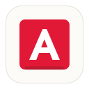

Adanos Market SentimentChrome extension for market research
Compare Reddit, X, News, and Polymarket sentiment for selected tickers with one Adanos API key.
Real-time market sentiment API
Check stock sentiment across Reddit, X, News, and Polymarket with one Adanos API key.
Retail investor discussion across stock communities.
Ticker detection
Detected symbols stay subtle on the page. The card opens on click, supports keyboard access, and lets users switch sources inside the overlay.
One ticker, four perspectives
Reddit, X / FinTwit, News, and Polymarket each show their own activity metric while keeping the same clean sentiment card layout.
News sentiment for TSLA is currently bearish with 37 sources across market news publishers.
Adanos Market Sentiment
Easy setup
Your key is stored locally in Chrome storage and only sent to api.adanos.org when a sentiment lookup is requested.
Built for focused market research
Webpage text is scanned locally to detect likely stock symbols. Only the clicked ticker, selected source, and analysis period are sent to the Adanos API.
Saves API key, source, period, and watchlist locally.
Adds right-click lookup for selected ticker text.
Calls the Market Sentiment API only after user action.